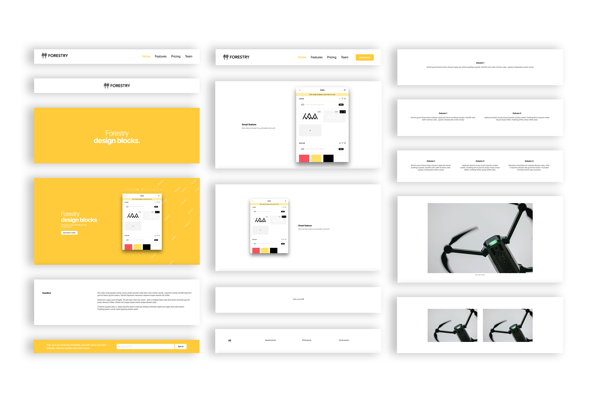

View the announcement post on Forestry.io
ubuild-jekyll is a Jekyll theme designed to work with Forestry’s Blocks feature. This theme provides a set of page-level components and a pre-configured Forestry Blocks UI that will empower content editors to construct their own webpages.
To use the page builder, select the Page Builder template when creating a new page.